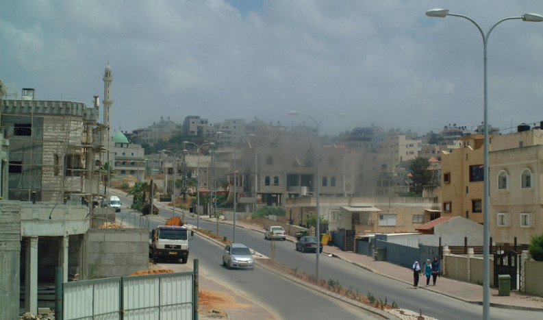

Is the Israeli government's new plan for economic development in Arab towns a shift from politics to pragmatism? (SEE ORIGINAL)

Street view of Kafr Kassim, one of the Arab towns earmarked for funds under the new development plan (Photo: Daniel Easterman)
The complex reality facing Israel’s 1.5 million Arab citizens today is often obscured by the constant political controversy revolving around the current crop of Arab politicians. As the rhetoric becomes more fierce and incendiary, the divisions and mutual distrust between Jews and Arabs has also tended to widen, contributing to an overall sense that the Arab population will never truly become part of Israel, nor have any desire to do so.
But is this picture really accurate? While the political grandstanding and Knesset dramatics grab all the headlines, a quiet economic revolution, spurred on from the heart of the Israeli government, is also taking place.
Back in February 2007, and to little fanfare, the Prime Minister’s Office (PMO) established a special governmental “Authority for the Economic Development of the Arab, Druze and Circassian Sector” to operate within the PMO’s departmental framework. The objective of the Authority was to “maximise the economic potential” of the three Arab communities by stimulating employment opportunities, enhancing its business and commercial sector, upgrading transportation and communication infrastructure, and finally building new housing facilities specifically for Arab citizens. By March 2010, “Decision 1539” was approved by the government, committing 778 million shekels across 5 years for the economic development of 13 Arab towns and villages throughout Israel.
One concrete example of where these funds have been spent so far, is on the brand-new “one-stop employment center” in Tira, a “village” of 22,000 people situated in the middle of Israel’s central Sharon region close to Kfar Saba. The Tira pilot center is the first of twenty two of its kind to be implemented countrywide, providing a variety of courses in vocational Hebrew, computer skills, English, and assistance in creating and refining CVs. The courses are particularly valuable for Arab women says the Director of the Center, Nibras Taha. “In the last two or three decades, the Arab society as a whole has undergone a series of changes,” he explains. “It is no longer taboo for woman from traditional families to work. The economic reality in Israel today means that it is imperative for both spouses to be employed.”
Nevertheless, serious challenges still remain. Efforts to create greater economic opportunity may be a step-in-the-right direction, but it is clear that emotional issues still present a major barrier to progress and better integration. When the Mayor of Tira, Mamoun Abd Alhai was asked in a recent press conference organised by the PMO’s Government Press Office whether he would support making two-year national community service for Arab youth compulsory (instead of military service), the Mayor expressed some misgivings. Although he said that the purpose behind the idea was well-intentioned, he also stressed that he would be more comfortable if the organization of national service programs took place through the “Ministry of Education or the Ministry of Welfare”. As such programs are currently connected to the IDF and the Ministry of Defense according to the Mayor, there will always be a “dilemma” among Arab youth on whether to take part, especially as long as the wider Israel-Palestinian conflict goes unresolved.
However, there are others who believe that the softly-softly strictly economic approach coming from the Prime Minister’s Office is the right way to go, even if the big political issues stay unresolved. Ibrahim Habib, Director of Regional Development at the Authority for the Economic Development of the Arab Sector, told me that ensuring proper government investment in Arab communities should not be left to the politicians but rather economic professionals who can use the clout of the Prime Minister’s Office to influence decisions. “The Arab sector doesn’t receive enough financial assistance from the government at the moment,” said Mr Habib, “but its better to accept one shekel now and request another later rather than rejecting everything out of hand, which is what politicians from the main Arab parties have done in the past.”
Mr Habib, himself an Arab-Christian, also told me that he sees growing disillusionment among the ordinary people of Israel’s “Arab street” towards the established Arab parties in the Knesset. “When the delegation of six Israeli-Arab MKs met with Muammar Gaddafi in Libya in April 2010 for example,” he recalls that this was a really big turning point. “People began to ask, how can they associate with such a leader and adequately represent our real-life needs and problems. Are they living in the real world?” Habib also says that the Muslim segment of the Arab population in particular is beginning to drift towards support for the mainstream Zionist parties – “even Likud”, although at present they are unwilling to admit the fact publicly.
Professional officials such as Ibrahim Habib are not sentimental about their involvement in the Israeli government, nor the very real achievements they are providing for their community, but appear to simply want to put politics to one side while the real work gets done. At the local level at least, even the politicians of the Arab sector seem keen to steer clear of partisan political squabbling. When I asked Mayor Mamoun Abd Alhai of Tira which party he belongs to, the answer was none, atzmai, “independent” he replied in perfect Hebrew.